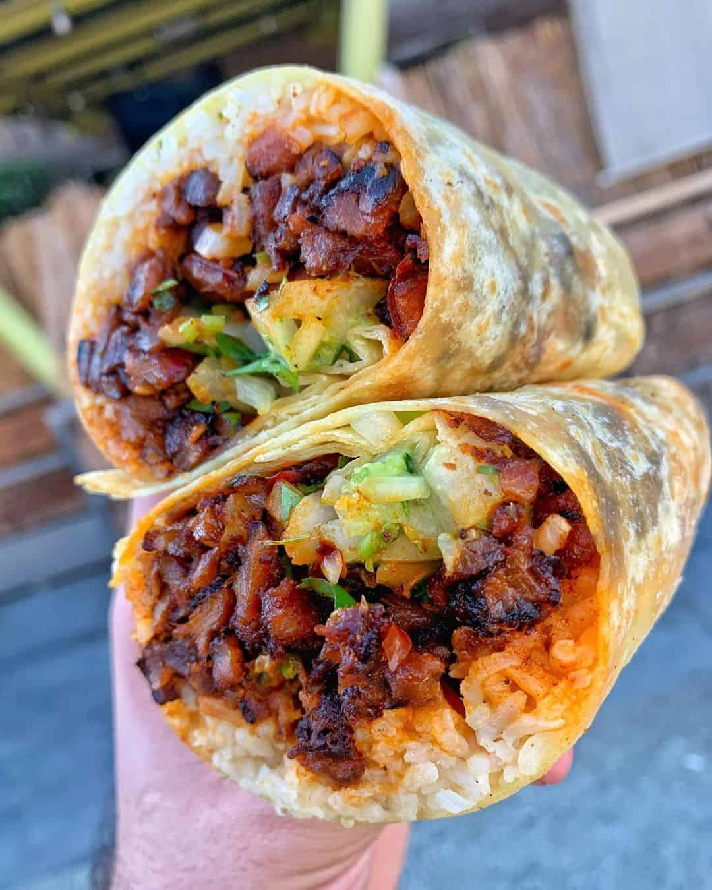

Burrito Recipe

The Burrito
This recipe will help you craft the most delicious burrito in the world.
One bite will have you smacking the closest object around you, it is that good!
The choice of meat is entirely up to prefence with that being said,
my prefence is Pastor.
Gather all your ingredients listed bellow and follow the step by step instructions.
Ingredients
- Flour Tortillia
- Meat of choice
- Rice
- Beans
- Salsa
- Guacamole
- Cheese
Steps
- Smack the tortillia on your plate.
- Smother a layer of mashed beans on the tortillia.
- Add rice all over the beans.
- Sprinkle Cheese lots of Cheeeeese.
- Grab your meat and place it throughout the middle of your tortillia.
- Top the tortillia with salsa and guacamole.
- The most important part wrap your burrito.
- Fold the bottom of the tortilla around half inch.
- Take one side "right or left" then crossover the other to the other side.
- Finally tuck all the ingredients in and roll.
- Enjoy!